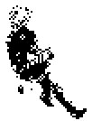

The Feu epoch is known as the era of time which began at the End Of Science.
From the moment Teleogic Constructors began altering the Courses of Time and to will events into happening, traditional intellect and even curiosity were seen as no more than crafts, or relics of a older time.
The Neon Hermetic knowledge states that the whole dimensionality of Time is of a finished shape; accessible and traversible. It is hypothetized that the universe is an operating function, rendering a final organization of space. In order words, the universe exists to formulate a state.
incoming neon hermetism actors ehrivevnv longest end neonev